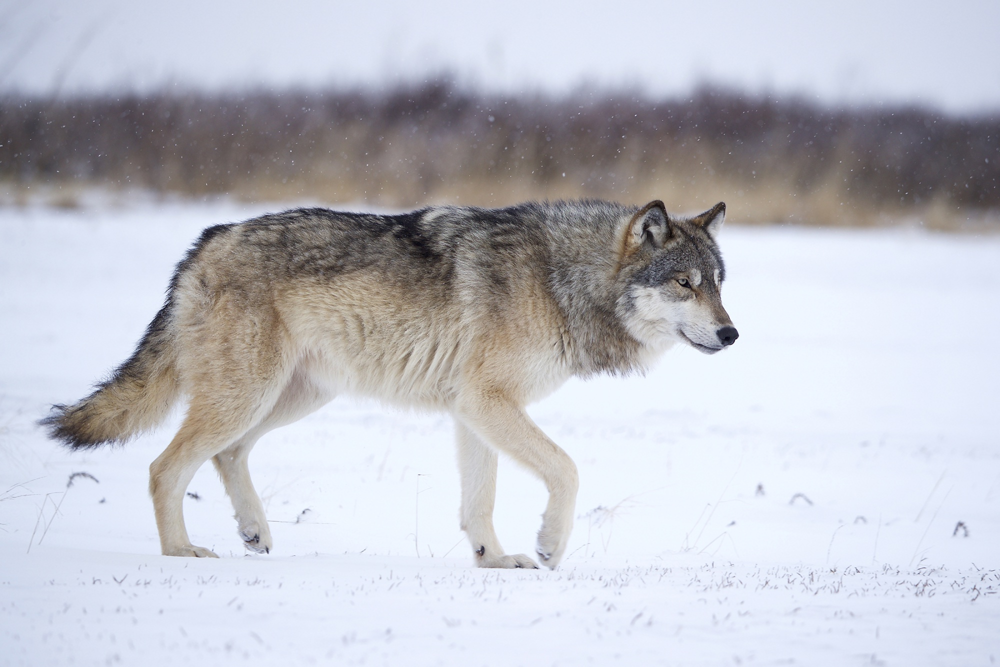
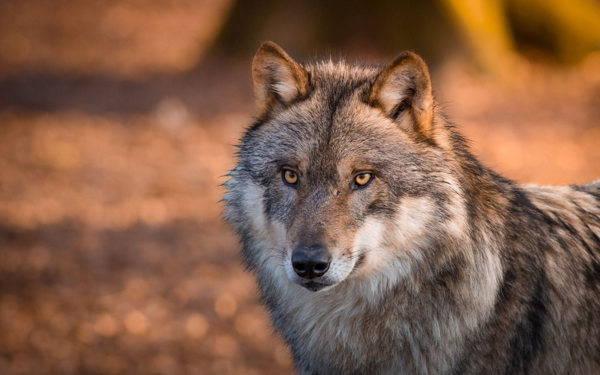
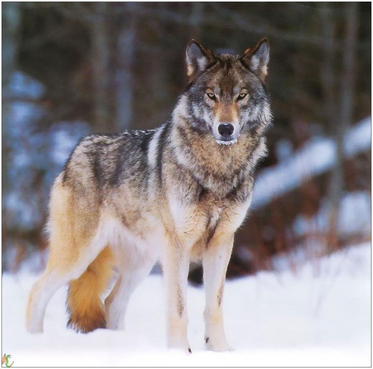

  
Вид хищных млекопитающих из семейства псовых. Это одно из самых крупных современных животных в своём семействе: длина его тела (без учёта хвоста) может достигать 160 см, длина хвоста — до 52 см, высота в холке — до 90 см. Масса тела может достигать 90–110 кг. Волк обитает в разных ландшафтах, но предпочитает степи, полупустыни, тундру, лесостепь, избегая густых лесных массивов и районов с густым снежным покровом. Во многих регионах мира волк находится на грани полного исчезновения. Волки по праву являются одними из самых хищных животных. Сбиваясь в стаи, они могут ходить и нападать на всех животных встречающихся на их пути. Но в добавок многие волки ходят одинокими, что делает их слабее днем, но сильнее ночью. Одинокий волк в мрачной ночи способен резко и тихо нападать на блуждающих животных.